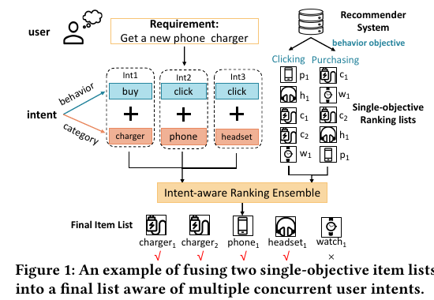
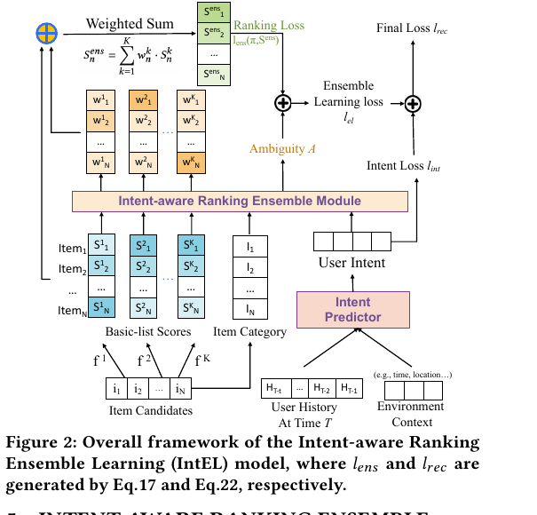
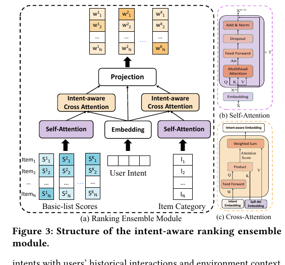
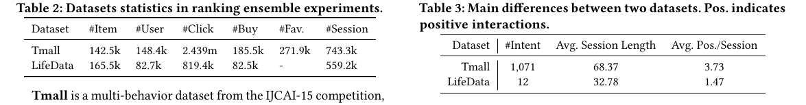
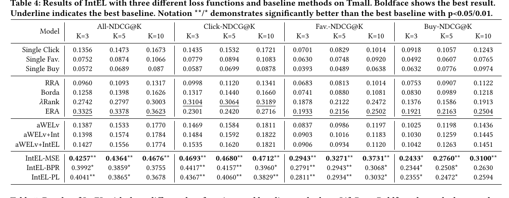
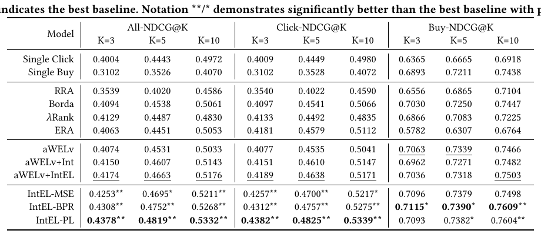
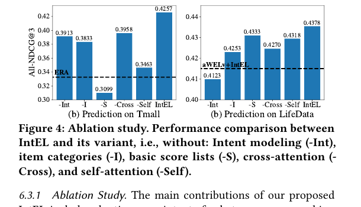
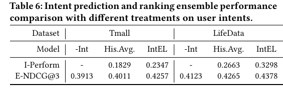
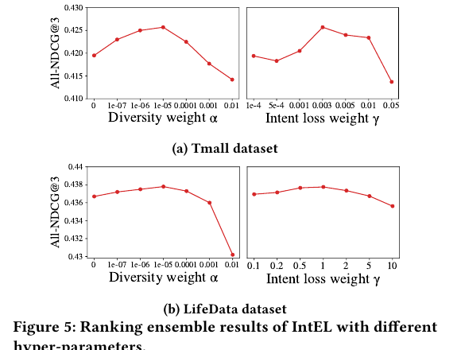

IntEL
1. 基本信息
- 标题：Intent-aware Ranking Ensemble for Personalized Recommendation
- 模型名：IntEL，
Intent-aware ranking Ensemble Learning - 作者：Jiayu Li, Peijie Sun, Zhefan Wang, Weizhi Ma, Yangkun Li, Min Zhang, Zhoutian Feng, Daiyue Xue
- 机构：Tsinghua University、BAAI、Meituan Inc.
- 时间：2023，SIGIR 2023
- DOI：https://doi.org/10.1145/3539618.3591702
- 代码：https://github.com/JiayuLi-997/IntEL-SIGIR2023
- 关键词：Ranking Ensemble、User Intent、Personalized Recommendation、Multi-objective Recommendation
- pdf位置：
C:\Users\chaol\Desktop\推荐论文阅读\reward sys\intel.pdf - 笔记位置：
论文笔记/精排/LTR与多目标融合/IntEL.md - 分类：精排 / LTR与多目标融合
2. 相关论文
- BatchRL-MTF：IntEL 在 related work 中引用了这条 RL 式 multi-task fusion 路线。两者都想替代固定融合策略，但 BatchRL-MTF 学的是 session 级融合权重，IntEL 学的是 item 级 basic-list 权重，并额外把用户 intent 和 error-ambiguity 分解接进训练目标。
3. 一句话总结
IntEL 解决的是“多个单目标推荐列表怎么按用户当前意图融合成一个最终列表”：它先把用户意图定义成 行为 × 类目 的分布，再用 intent predictor 预测当前访问意图，最后通过 self-attention + intent-aware cross-attention 给每个 item 在每个 basic list 上分配 item-level 权重，并用 error-ambiguity 分解把“降低排序损失”和“保持 basic model 分歧”合进同一个训练目标。
4. 论文在解决什么问题
4.1 为什么不是简单多目标排序
工业推荐系统通常不会只准备一个候选列表。用户进入平台时，系统可能已经有多个按单一行为目标训练出来的列表，例如点击列表、购买列表、收藏列表。问题是一次访问里用户可能同时有多个 intent：既想买手机充电器，也可能顺手浏览手机和耳机。
传统做法通常是固定 list-level 权重，把几个列表分数相加。这有两个缺陷：
- 权重不是个性化的，忽略了用户当前访问意图；
- 权重是 list-level 的，同一 basic list 内所有 item 共享一个权重，无法表达“这个列表里某些类目的 item 更符合当前 intent”。
IntEL 的目标就是把融合从 list-level fixed weight 推到 item-level personalized weight。
4.2 Figure 1：问题形式是异质单目标列表的意图感知融合

Figure 1 用在线购物例子说明论文的问题设定。系统有两个 basic ranking lists：点击目标列表和购买目标列表。用户当前并不是只有一个目标，而是同时包含 buy charger、click phone、click headset 等多个 intent。
IntEL 要做的不是在两个列表里选一个，也不是固定加权，而是根据当前 intent 重新给候选 item 排序。图中最终列表把 charger1 / charger2 / phone1 / headset1 放在前面，而不相关的 watch1 被压后。这解释了为什么 item category 必须进入融合模块：同一个点击列表里，不同类目的 item 对当前访问的价值不一样。
5. 预备定义和理论基础
5.1 用户意图：行为和类目的联合分布
论文沿用 AIR 对 intent 的定义，把一次访问中的用户 intent 写成 item category intent 和 behavior intent 的联合概率分布：
这里 是类目，比如 phone / charger / hotel； 是行为，比如 click / buy / favorite。这个定义比“用户兴趣”更具体，因为它同时回答两个问题：用户想对哪类 item 做什么行为。
5.2 排名融合的基本形式
设有 个 basic models，每个模型针对一个行为目标训练。对用户 和上下文 ，所有 basic list 的候选 item 取并集：
第 个 basic model 对 item 输出分数 。IntEL 学一个 item-level 权重 ，最终融合分数是：
这里最容易忽略的是 shape 和归一化条件。对每个 item ，权重向量是 维，必须能和 个 basic scores 一一相乘；理论分解还要求 且 。如果权重不归一，后面的 error-ambiguity 分解就不再是论文证明的形式。
5.3 三种 ranking loss
论文分别考虑 point-wise、pair-wise、list-wise 三类损失。
Point-wise 用 MSE，把多级反馈排序 直接当监督：
Pair-wise 用 BPR。对每个反馈级别，把正样本和低一级负样本配对：
List-wise 用 Plackett-Luce likelihood：
这三类 loss 对应不同数据形态：Tmall 有 Buy > Favorite > Click > Examine 四级反馈，更像打分回归，所以 MSE 更适合；LifeData 的 session 更短、正样本更少，比较式 BPR / P-L 更合适。
5.4 EA 分解：为什么 item-level 权重在理论上可行
论文理论部分的核心是把 ensemble loss 写成“basic model loss 的加权和 - ambiguity”。对 point-wise loss，分解可以写成：
其中 ambiguity 是：
这个式子的含义很直接：如果 basic models 本身损失不差，同时它们的预测有足够分歧，那么 ensemble loss 的上界会更低。作者把这个思路扩展到 BPR 和 P-L，但 pair-wise / list-wise 情况多了一个隐藏条件：同一个 basic model 在不同 item 上的权重不能变化过猛，即 。这个条件很重要，因为 pair/list-wise loss 关心的是 item 间顺序；如果同一列表中不同 item 的权重跳变太大，原 basic score 的相对顺序会被过度扭曲，分解里的额外项就不再可忽略。
基于这个分解，训练时 basic lists 是固定的，basic model loss 是常数，所以 IntEL 只需要优化两件事：
也就是降低最终排序损失，同时最大化 ambiguity。这里的 ambiguity 不是推荐列表里的 item diversity，而是 ensemble learning 里的 basic model 分歧。论文特意换用 ambiguity 这个词，就是为了避免和推荐多样性混淆。
6. 方法：IntEL 怎么生成 item-level 权重
6.1 Figure 2：整体框架

Figure 2 把 IntEL 的训练流画出来了。
- Intent predictor 根据用户历史 session、历史 item-level interaction 和当前环境上下文预测当前 intent。
- Ensemble module 接收三类输入：basic-list scores、item categories、predicted user intent。
- 模块输出一个 的权重矩阵 。
- 用这个矩阵对 个 basic scores 做加权求和，得到每个 item 的最终 。
- 训练目标由 ranking loss、ambiguity loss、intent prediction loss 三部分组成。
这张图最重要的地方是：IntEL 没有重新训练 basic models。basic scores 是预生成且固定的，IntEL 只训练“如何融合”。这让它更像 ranking 后面的一个可学习 ensemble layer，而不是完整替代推荐主模型。
6.2 Intent predictor：先预测这次访问的行为-类目分布
用户在时间 的 intent 由三类信息预测：
- 当前环境上下文 ，例如时间、位置；
- session-level history ，捕捉历史访问里常见 intent；
- item-level history ，捕捉正反馈 item 的细粒度类目偏好。
论文用两个 sequential encoders 分别编码 session-level 和 item-level 历史，具体 encoder 可以是 GRU 或 Transformer。最终预测是：
这个模块的输出不是一个单标签，而是一个 intent 分布。原因是一次访问可能同时包含多个 intent；如果强行压成一个类别，会丢掉“既想买充电器，又想浏览手机”的并发性。
6.3 Figure 3：ensemble module 的三段结构

Figure 3(a) 是融合模块本体，Figure 3(b)(c) 分别说明 self-attention 和 intent-aware cross-attention。
第一步，basic-list scores 自己先过 self-attention。输入可以看成 的分数矩阵：每一行是一个 item，每一列来自一个 basic model。self-attention 的作用是捕捉同一个 basic list 内部的分数关系。item categories 也走一条 self-attention，用来表示候选集里的类目分布。
第二步，把预测出来的 user intent 投影成 ，再作为 query 去 cross-attend 到 score 表征和 category 表征：
这里的关键是：作者没有把 behavior intent 和 category intent 拆成两个模块分别处理，而是用整体 intent 分布同时指导 score 和 category 的聚合。这样做隐含了一个判断：用户行为和类目不是独立的，buy charger 与 click charger 对融合权重的含义不同。
第三步，把 intent-aware score embedding 、intent-aware category embedding 、intent embedding 拼起来，再投影到 维：
输出 ，也就是每个 item 对每个 basic list 的权重。这个输出形状必须是 ，否则无法和 Eq.1 里的 basic score 矩阵逐项相乘。
6.4 最终训练目标
IntEL 同时训练 intent predictor 和 ensemble module。最终 loss 是：
其中 用 KL-divergence 衡量真实 intent 分布和预测 intent 分布的距离。 控制 ambiguity 项的强度， 控制 intent prediction loss 的强度。
这个目标有一个实际 trade-off： 太小，模型退化成只优化最终 ranking loss； 太大，模型会过分追求 basic model 之间的分歧，反而牺牲最终排序。Figure 5 的超参曲线也验证了这一点。
7. 实验与结果
7.1 数据和设置

实验用两个数据集：
Tmall：公开在线购物数据，包含 Click、Fav.、Buy 三类行为。intent 维度是357 类目 × 3 行为 = 1071。LifeData：本地生活服务数据，包含 Click、Buy 两类行为。intent 维度是6 类目 × 2 行为 = 12。
两个数据集差异很大。Tmall 平均 session 长度 68.37，平均正样本 3.73；LifeData 平均 session 长度 32.78，平均正样本 1.47。这解释了为什么不同 loss 在两个数据集上表现不同。
basic scores 在 ensemble 前预生成且固定。Tmall 用 DeepFM 分别训练 Click、Fav.、Buy 三个 basic models；LifeData 使用平台已有的 click probability 和 buy probability 两个列表。评估指标是 NDCG@3/5/10，同时看整体多级 ground truth 和各行为目标。
7.2 Table 4：Tmall 上 MSE 版 IntEL 最强

Tmall 的主结果很清楚：IntEL-MSE 在所有四组指标上基本都是最强。
代表结果：
All-NDCG@3/5/10：0.4257 / 0.4364 / 0.4676Click-NDCG@3/5/10：0.4693 / 0.4680 / 0.4712Fav.-NDCG@3/5/10：0.2943 / 0.3271 / 0.3731Buy-NDCG@3/5/10：0.2433 / 0.2760 / 0.3100
这里最有解释力的对比不是 single models，而是 aWELv 系列。aWELv 是 list-level weight，aWELv+Int 把 intent 作为特征，aWELv+IntEL 用 IntEL 模块预测 list-level 权重。它们都有提升，但离 item-level IntEL 仍然很远。这说明 intent 本身有用，但更关键的是权重要落到 item-level，而不是只落到 list-level。
7.3 Table 5：LifeData 上比较式 loss 更适合

LifeData 上最佳结果更多来自 IntEL-PL 和 IntEL-BPR：
IntEL-PL的All-NDCG@3/5/10是0.4378 / 0.4819 / 0.5332IntEL-PL的Click-NDCG@3/5/10是0.4382 / 0.4825 / 0.5339IntEL-BPR的Buy-NDCG@3/5/10是0.7115 / 0.7390 / 0.7609
论文给出的解释是 LifeData session 更短、正样本更少，所以比较式目标更贴近训练信号。我的理解是：当每个 session 里正反馈稀疏时，直接拟合多级分值不如学习“哪个 item 应该排在前面”稳定。
7.4 Figure 4：消融说明三类输入和两层 attention 都有用

Figure 4 比较完整 IntEL 和五个删减版本：
-Int：去掉 user intent；-I：去掉 item category；-S：去掉 basic score list；-Cross：去掉 intent-aware cross-attention；-Self：把 self-attention 换成直接连接。
结果是所有删减都下降。Tmall 上去掉 basic scores 和 self-attention 掉得明显，说明长 session 里 basic list 内部的分数结构很重要。LifeData 上去掉 intent 下降最大，说明在目标更少、session 更短的本地生活场景里，当前访问 intent 对融合更关键。
7.5 Table 6：预测 intent 比历史平均更强

Table 6 专门验证 intent prediction 的价值。His.Avg. 是一个很强的简单实现：直接用用户历史 session 的平均 intent 当当前 intent。它已经比 -Int 好，说明 intent 信息确实有用。
但 IntEL 的预测 intent 更强：
- Tmall：
I-Perform = 0.2347，E-NDCG@3 = 0.4257 - LifeData：
I-Perform = 0.3298，E-NDCG@3 = 0.4378
这个表支撑了论文的一个重要判断：intent 不是只作为解释变量存在，预测得越准，ranking ensemble 越好。
7.6 Figure 5：超参说明 ambiguity 和 intent loss 都不能无限加

Figure 5 看 和 对 All-NDCG@3 的影响。
对 ，两个数据集都呈现“过小或过大都会变差”的趋势。尤其 太大时，模型过度追求 basic model ambiguity，导致真正的 ensemble ranking loss 优化不足。
对 ，Tmall 更敏感，LifeData 更稳定。原因是 Tmall 有 1071 个 intent，预测难度大，所以 intent loss 权重会明显影响 predictor 的学习；LifeData 只有 12 个 intent，预测任务简单很多。
8. 理解、启发与局限
8.1 这篇论文最值得记的地方
IntEL 的价值不只是“加了用户意图”，而是把三个层次连起来了：
- 理论上，item-level ensemble weight 仍然可以通过 EA decomposition 得到合理上界；
- 结构上，user intent 同时指导 score embedding 和 category embedding；
- 训练上，ranking loss、ambiguity loss、intent loss 合在一起，使模型既优化最终列表，又保留 basic models 的有效分歧。
这比简单把 intent 拼到 MLP 特征里更完整。
8.2 和 BatchRL-MTF 的差别
两篇都在处理“多个目标/多个列表如何融合”的问题，但粒度不同。
- BatchRL-MTF 把 fusion 写成 session 级 RL 调权，动作是一组个性化 fusion weights，主要服务于长期满意度优化。
- IntEL 把 fusion 写成 item 级 rank aggregation，每个 item 在每个 basic list 上都有自己的权重，主要服务于当前访问里多意图、多行为目标的列表融合。
所以 BatchRL-MTF 更像策略层调权，IntEL 更像排序层的 item-level ensemble。
8.3 隐含条件
- basic models 必须已经能提供有意义且互补的分数。IntEL 只学习融合，不负责修复很差的 basic lists。
- item-level 权重需要非负并按 basic model 维度归一，否则理论分解不成立。
- pair-wise / list-wise 理论还依赖同一 basic model 内不同 item 权重变化不太剧烈。
- intent label 依赖历史行为和 item category 的定义；如果业务类目过粗或行为层级不稳定，intent predictor 的监督会变差。
- 论文实验只用 DeepFM 或平台已有 basic scores 生成列表；如果 basic lists 来自多行为模型或更强 LLM/Transformer ranking 模型，IntEL 的收益可能会变化。
8.4 记忆点
IntEL 可以记成一句话：
用
行为 × 类目的用户意图，去学习每个 item 对每个单目标列表的融合权重，并用 EA ambiguity 把“basic model 互补性”显式写进 ranking ensemble 训练。
以后看同类 paper，可以先问三件事：
- 它的融合权重是全局、用户级、list-level，还是 item-level？
- 它是否利用当前访问 intent，而不只是用户长期兴趣？
- 它有没有解释为什么多个 basic models 的分歧是有益信号，而不是噪声？
9. 结论
IntEL 把工业推荐里的 rank aggregation 问题重新定义为 intent-aware item-level ensemble。它的核心贡献是：先证明 item-level 权重在 point-wise、pair-wise、list-wise 损失下仍有 EA 分解意义，再用 intent predictor 和两层 attention 模块学习 的融合权重。实验显示，IntEL 在 Tmall 和 LifeData 上都能同时提升多个行为目标；消融和 intent 分析也支持“basic scores、item categories、user intents、self/cross-attention 都是必要信号”这个判断。